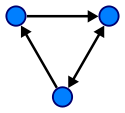
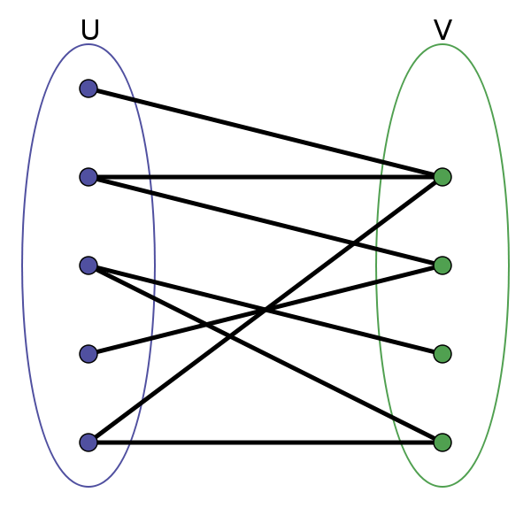
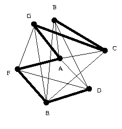
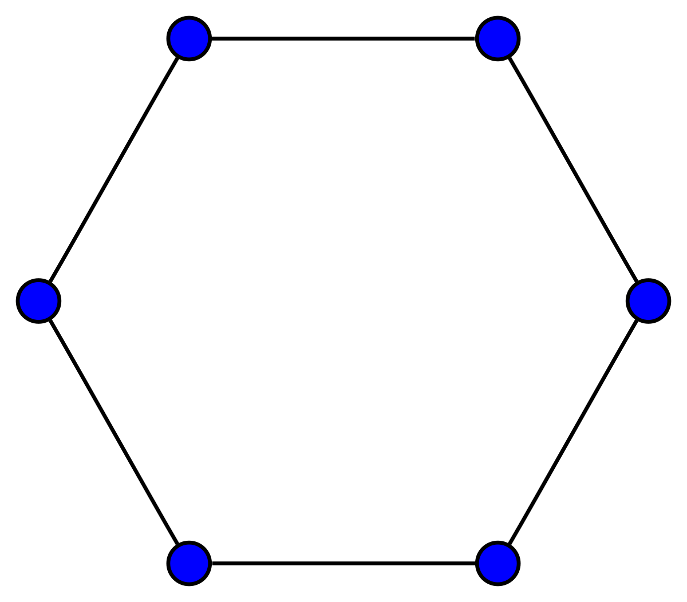

Alguns tipos de grafos se destacam por propriedades particulares que serão aqui abordadas.
Grafo Direcionado
Grafo direcionado,orientado,dirigido ou dígrafo Um grafo é dito direcionado onde o sentido das ligações
entre os vértices é importante. Nesse
caso, as arestas possuem um sentido
marcado por uma seta.

Grafo Completo
em que todo vértice é adjacente a todos os outros vértices.
O grafo completo de vértices é frequentemente denotado por

Grafo Regular
O grafo regular é um grafo onde cada vértice tem o mesmo número de adjacências,ou seja
Um grafo
é se .

Grafo Bipartido
Um grafo simples é bipartido se seus vértices podem ser
particionados em dois subconjuntos e tal que toda aresta
tem um extremo em e outro em ;

Para o Grafo temos os conjuntos e
de forma que eles são disjuntos e existe uma relação de bijeção entre os dois conjuntos, onde tais que toda aresta conecta um vértice em a um vértice em .
Grafo Caminho
Grafo Caminho com vértices é um grafo simples denotado por cujos
vértices podem ser arranjados em uma sequência linear de tal
forma que dois vértices são adjacentes se eles são consecutivos
na sequência e não são adjacentes caso contrário.

O grafo caminho está visível com risco mais acentuado na imagem.
Grafo Ciclo
Grafo Ciclo de vértices os quais podem ser arranjados em uma sequência cíclica de tal
forma que dois vértices são adjacentes se eles são consecutivos
na sequência e não são adjacentes caso contrário.
